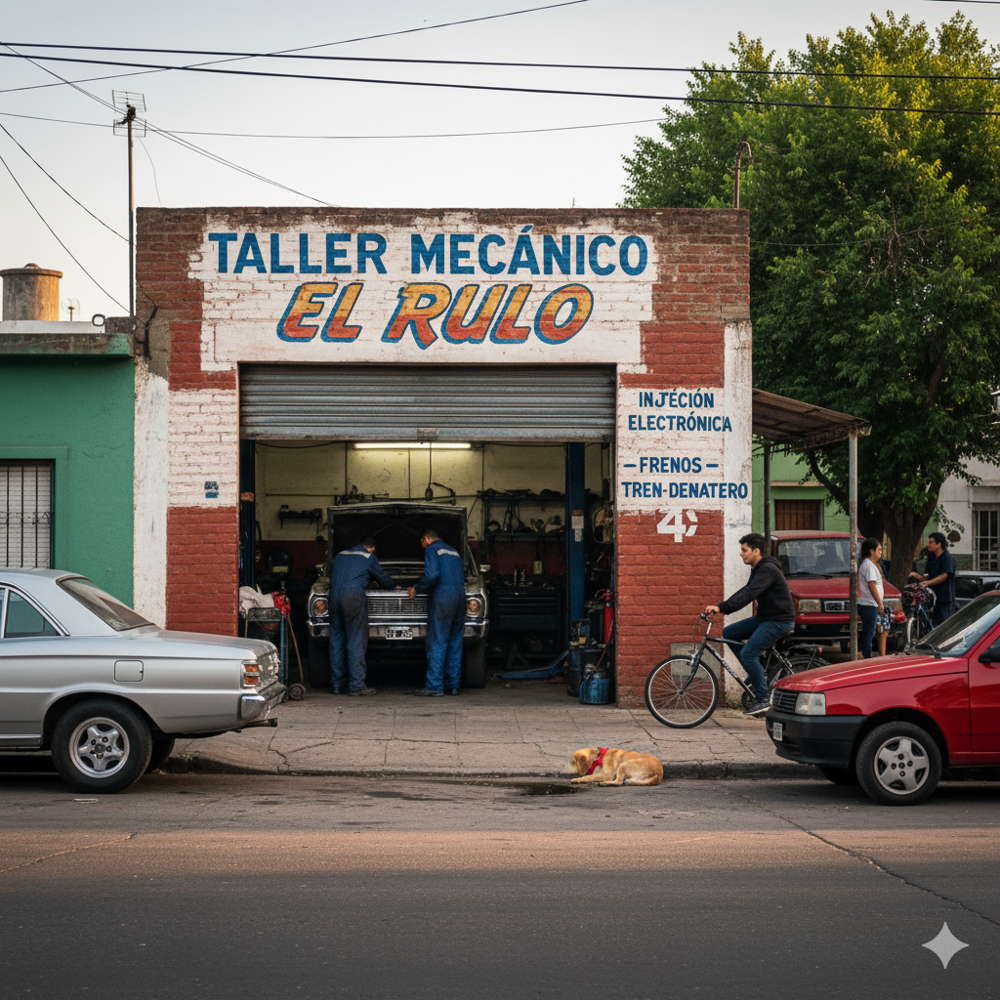
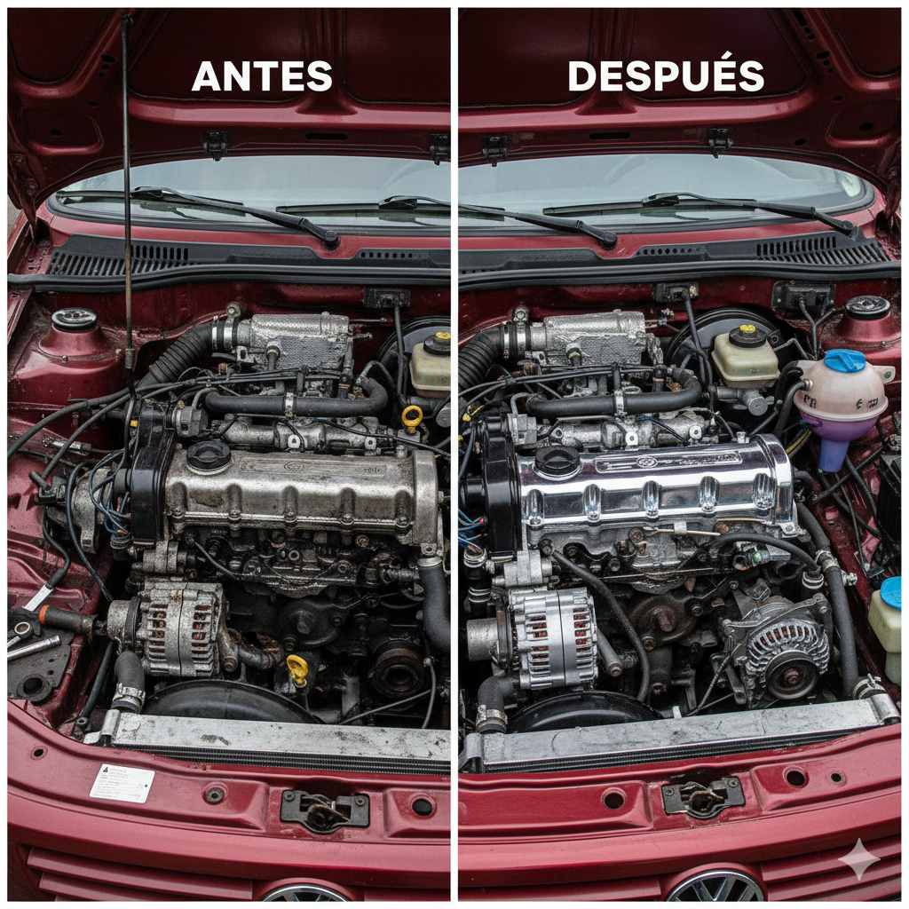
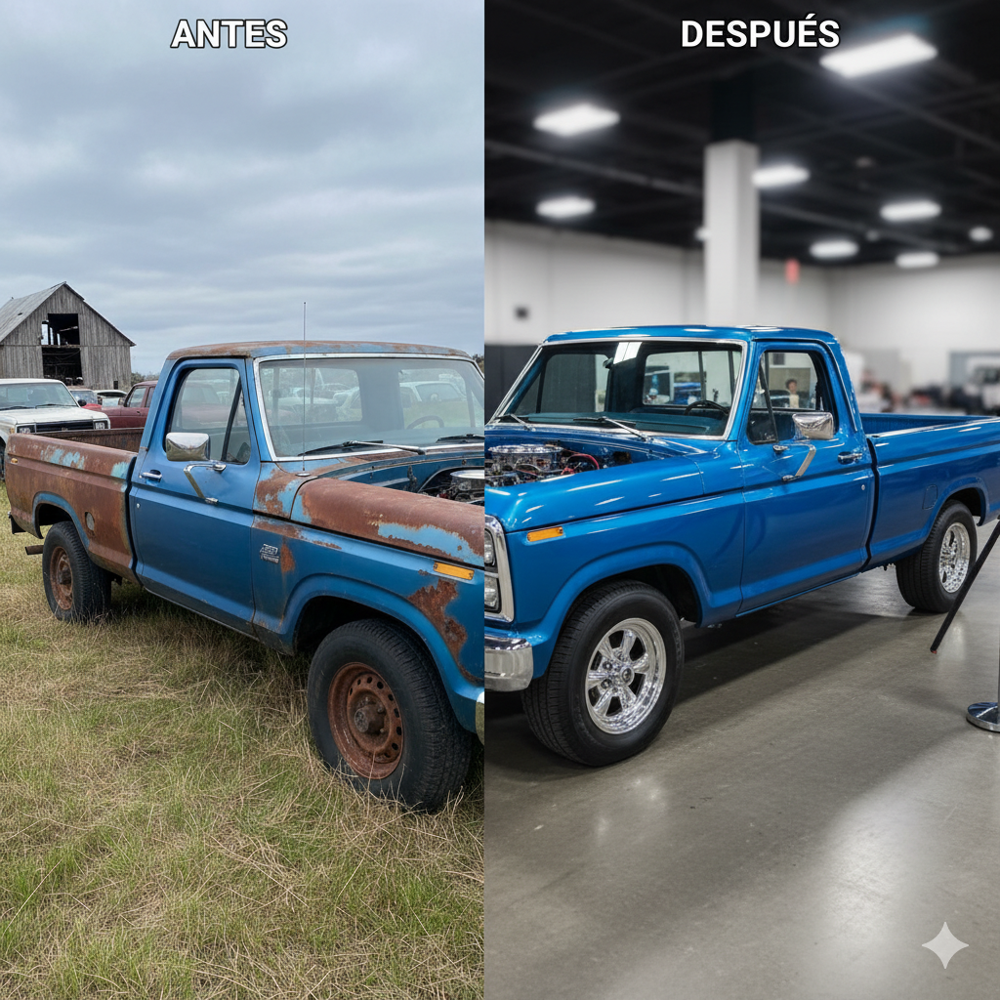
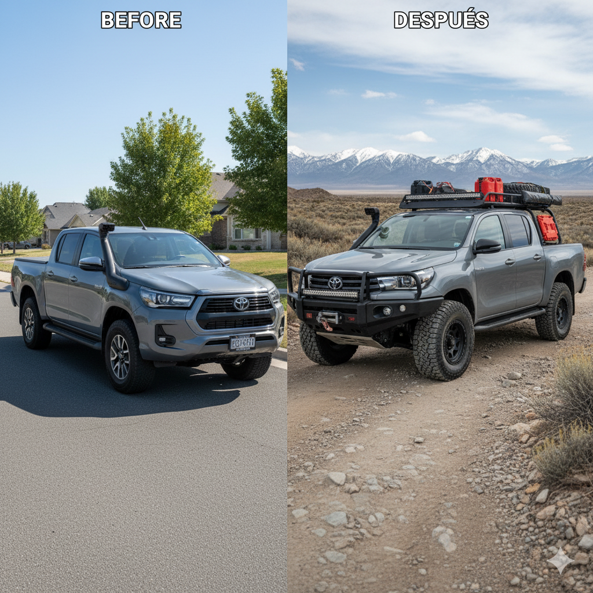

Hacemos la mecánica como si el auto fuera nuestro
Más de 15 años atendiendo al barrio con honestidad, rapidez y precios justos. Servicios de mecánica, diagnóstico con escáner, inyección, frenos y más.

Cómo llegué al oficio
Desde chico me gustaron los autos. Mi viejo tenía un Falcon y siempre lo estábamos arreglando entre los dos. Con el tiempo me fui metiendo más, aprendí de un maestro mecánico del barrio y después seguí por mi cuenta. Es algo que me apasiona: escuchar un motor y saber qué le pasa.
Qué me diferencia
Lo que me distingue es el trato de confianza con el cliente. La gente del barrio me conoce: explico todo lo que hago y no cambio nada sin avisar. Además, tengo precios justos, trabajo rápido, y si el cliente está en apuros, trato de darle una mano lo antes posible.
Servicios que ofrezco
- Mecánica en general
- Cambio de aceite y filtros
- Frenos y embragues
- Inyección electrónica y diagnóstico con escáner
- Alineación y balanceo
- Reparación de ruidos y puesta a punto
Herramientas y conocimientos
Uso herramientas manuales y eléctricas, escáner automotriz, medidor de compresión y todos los instrumentos necesarios para diagnóstico moderno. Sé de mecánica tradicional y electrónica automotriz.
Trabajos destacados



Testimonios
“El Rulo es de confianza, me arregló el auto en un día y me explicó todo.” – Marta G.
“Me salvó con el coche antes de un viaje, un genio.” – Ariel P.
Contacto
📞 Teléfono/WhatsApp:
📍 Dirección: Calle Italia 523, Barrio Constitución, San Rafael, Mendoza
📱 Instagram: @tallerdelrulo